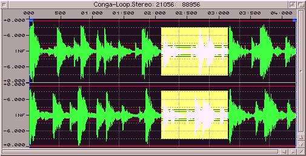

Das Fenster :
Falls ein Sample geladen oder erzeugt wurde, so sieht man dieses in einem eigenen
Fenster. Die Änderung von Position und die Größe des Fensters ist über die
dafür vorgesehenen Gadgets möglich. Um Positionen und Aussteuerungen des Samples
besser abschätzen zu können werden mehrere Hilfslinien eingezeichnet. Es
können weitere Hilfslinien eingezeichnet werden, um die maximale, durchschnittliche
und reale (akustische) Amplitude anzuzeigen.
Falls ein Loop angeschaltet ist und Start- und Längenwerte gesetzt sind, werden
diese als vertikale Linien mit Boxen an den oberen Enden eingezeichnet. Wenn
ein Bereich markiert ist, sehen Sie dies in Form eines hervorgehobenen Rechteckes.
In der Titelleiste eines Samplefensters wird der Name, die Samplingrate
und die Länge des Puffers angezeigt. Während des Abspielens eines Samples sehen
Sie dort die Abspielposition.
Aktionen im Fenster :
Wenn man die Maus umherbewegt, wird der Mauszeiger seine Gestalt ändern um die
möglichen Aktionen anzuzeigen.
Die Looplinien können durch Anklicken der Box und Bewegen der Maus bei gedrükkter
linker Maustaste verschoben werden.
Wenn Sie außerhalb der Loop-Boxen und markierter Bereiche in das Samplefenster
klicken und bei gedrückter linker Maustaste die Maus bewegen, wird ein Bereich
markiert. Wenn Sie in einen markierten Bereich klicken (nicht am Rand), können
Sie diesen herumschieben, solange sie die Maustaste gedrückt halten. Wenn Sie
in den Bereich auf die Ränder klicken, können Sie den Bereich in die entsprechende
Richtung verändern. Hier ein 'Bild' um das etwas zu verdeutlichen (wobei
die Form des Mauszeigers dies schon verdeutlichen sollte) :
|
|
1 linken und oberen Rand verändern
2 oberen Rand verändern
3 rechten und oberen Rand verändern
4 linken Rand verändern
5 herumbewegen
6 rechten Rand verändern
7 linken und unteren Rand verändern
8 unteren Rand verändern
9 rechten und unteren Rand verändern
|
Dieser Bereich kann nun geschnitten oder vergrößert werden. Falls ein Bereich
vergrößert wurde, so kann man den Ausschnitt mit den Scrollbalken verschieben.
Dieser wird auch während des Verschiebens ständig neugezeichnet.
Während dem Verschieben von Looppointern, dem Markieren von Bereichen und dem
Ändern des Ausschnittes werden in der Statusleiste Information über Start-,
Endpunkte und Länge angezeigt.
Wenn Sie das Sample größer als 1:1 vergrößert haben und in der Bereichs-Toolbar
"Trace" angewählt wurde können Sie mit der Maus (linke Taste) in das Samplefenster
zeichnen und somit diverse Fehler (Knackser) manuell beseitigen. Die
Darstellung wird erst erneuert wenn Sie die Maustaste loslassen.
|